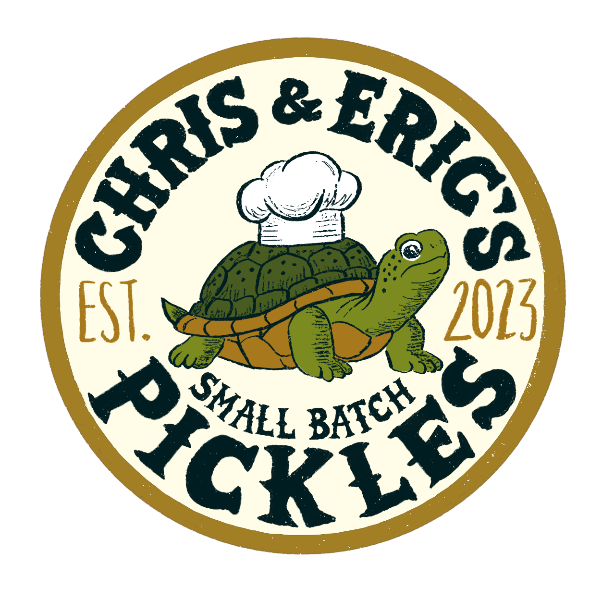
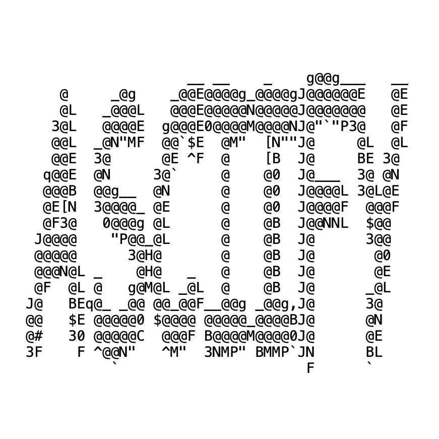

Mandarin Trainer
I made this site to help myself practice Chinese vocabulary exactly the way I like to learn. The site is tailored to the complexities of learning Chinese, focused on learning Pinyin alongside a term and definition.

I made this site to help myself practice Chinese vocabulary exactly the way I like to learn. The site is tailored to the complexities of learning Chinese, focused on learning Pinyin alongside a term and definition.
My friend Chris and I started a pickle company in 2023, making fresh, interestingly flavored pickles out of our college apartments. In Spring 2026 we closed the business for graduation, and all profits were donated to AFSP.

The results of my multi-year fascination with rendering images as text. ASCIIFY-1 relies on euclidean distance for rendering with monospaced fonts, while ASCIIFY-2 extends the project to variable-width fonts using beam search so it works in real websites, like the top of this one.

Research project exploring how deep reinforcement learning can master complex strategy in a tiny environment. In Vanishing Tic Tac Toe, each player's oldest pieces begin to disappear over time, adding temporal planning to a very simple game.
We trained a Double Deep Q-Network agent against a curriculum of adversaries. Developed alongside an international team during my time at National Taiwan University in Taipei.